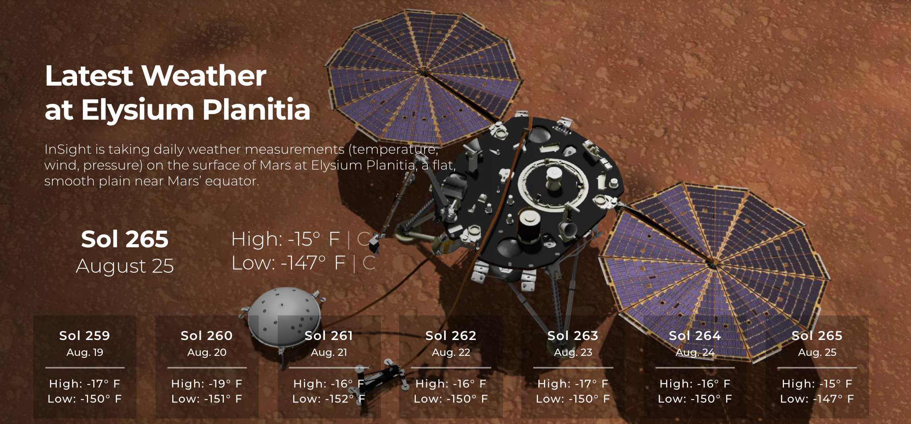

The National Aeronautics and Space Administration (NASA, /ˈnæsə/) is an independent agency of the United States Federal Government responsible for the civilian space program, as well as aeronautics and aerospace research. NASA was established in 1958, succeeding the National Advisory Committee for Aeronautics (NACA). The new agency was to have a distinctly civilian orientation, encouraging peaceful applications in space science. Since its establishment, most US space exploration efforts have been led by NASA, including the Apollo Moon landing missions, the Skylab space station, and later the Space Shuttle. NASA is supporting the International Space Station and is overseeing the development of the Orion Multi-Purpose Crew Vehicle, the Space Launch System and Commercial Crew vehicles. The agency is also responsible for the Launch Services Program which provides oversight of launch operations and countdown management for uncrewed NASA launches. NASA science is focused on better understanding Earth through the Earth Observing System advancing heliophysics through the efforts of the Science Mission Directorate's Heliophysics Research Program exploring bodies throughout the Solar System with advanced robotic spacecraft missions such as New Horizons; and researching astrophysics topics, such as the Big Bang, through the Great Observatories and associated programs
One of the most popular websites at NASA is the Astronomy Picture of the Day. In fact, this website is one of the most popular websites across all federal agencies. It has the popular appeal of a Justin Bieber video. This endpoint structures the APOD imagery and associated metadata so that it can be repurposed for other applications. In addition, if the concept_tags parameter is set to True, then keywords derived from the image explanation are returned. These keywords could be used as auto-generated hashtags for twitter or instagram feeds; but generally help with discoverability of relevant imagery.
The Space Weather Database Of Notifications, Knowledge, Information (DONKI) is a comprehensive on-line tool for space weather forecasters, scientists, and the general space science community. DONKI provides chronicles the daily interpretations of space weather observations, analysis, models, forecasts, and notifications provided by the Space Weather Research Center (SWRC), comprehensive knowledge-base search functionality to support anomaly resolution and space science research, intelligent linkages, relationships, cause-and-effects between space weather activities and comprehensive webservice API access to information stored in DONKI.
NASA’s InSight Mars lander takes continuous weather measurements (temperature, wind, pressure) on the surface of Mars at Elysium Planitia, a flat, smooth plain near Mars’ equator. This API provides per-Sol summary data for each of the last seven available Sols (Martian Days). As more data from a particular Sol are downlinked from the spacecraft (sometimes several days later), these values are recalculated, and consequently may change as more data are received on Earth.
